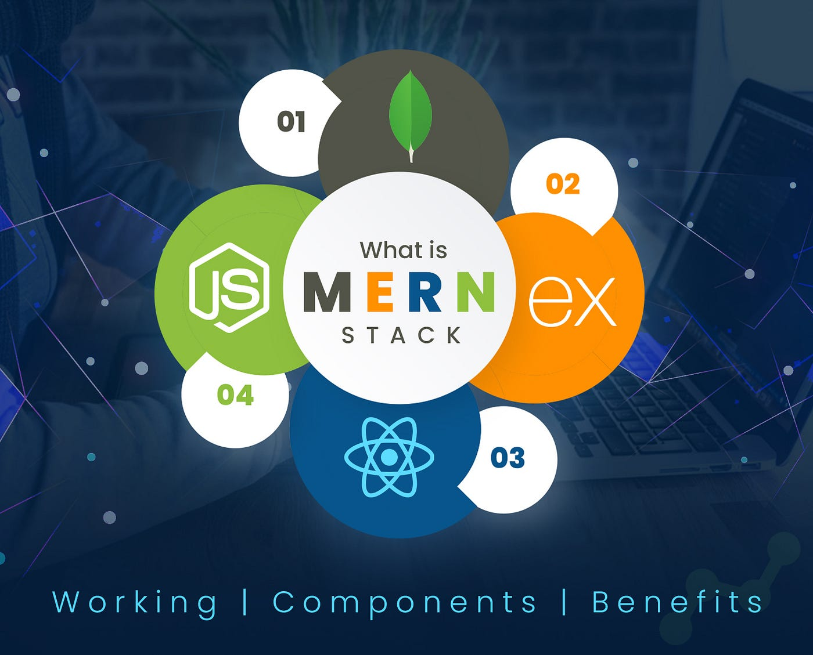
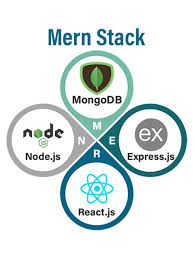

A MERN stack developer is a full-stack JavaScript developer specializing in building dynamic web applications using MongoDB (database), Express.js (backend framework), React.js (frontend library), and Node.js (runtime environment).


A MERN stack developer is a full-stack web developer specializing in the MongoDB, Express.js, React.js, and Node.js stack, using JavaScript across the entire application for a cohesive, efficient development experience. They build complete web applications, handling front-end (user interface with React), back-end (server logic with Node/Express), and database (data storage with MongoDB) layers. MERN stack developers are highly paid, especially with experience, with senior roles in major tech hubs earning significant salaries (₹15L+ in India, potentially $90k+ in US startups) due to high demand, though competition is increasing, requiring continuous learning in areas like DevOps and cloud to boost earning potential.
| Frontend | Backend | Database |
| HTML | Java | MongoDB |
| CSS | Python | MySql |
| JavaScript | NodesJS | AWS |